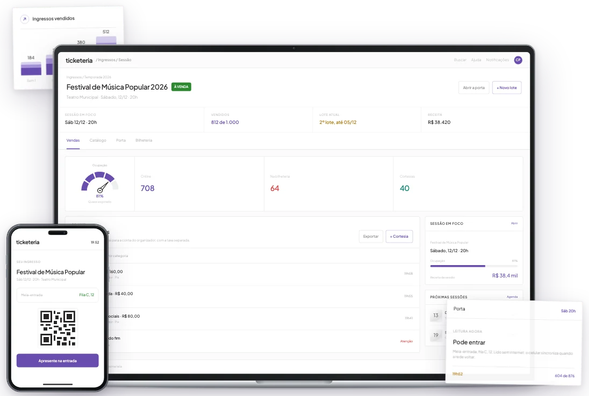

01
No seu domínio
A agenda e a compra ficam no endereço do seu site. O público não sai de lá para comprar.
/01Ticketeria · venda de ingressos
Venda online no seu domínio, na porta do evento e no celular da bilheteria. O valor do ingresso vai para a sua conta; o Jards cobra uma taxa por ingresso vendido.

Fig. 01 · prévia da TicketeriaDados de exemplo
/02Por que a Ticketeria
Num marketplace de ingressos, quem compra vira cliente da plataforma. Na Ticketeria, a compra acontece no seu site, com a sua marca, e a relação com o público fica com você.
01
A agenda e a compra ficam no endereço do seu site. O público não sai de lá para comprar.
02
O pagamento é dividido na hora: o ingresso vai para a sua conta e só a taxa fica com o Jards. O Jards não guarda o seu dinheiro.
03
O Jards ganha quando você vende: uma taxa por ingresso, mostrada na hora da compra.
/03Como funciona · 05 etapas
Da sessão publicada à bilheteria fechada, no mesmo lugar.
Monte a sessão, as categorias e os lotes.
No seu site, sem o público precisar criar conta.
O valor vai para a sua conta; a taxa, para o Jards.
O QR é lido na porta, mesmo sem internet.
Bilheteria pronta para o ECAD e a prefeitura.
/04Venda online
Publique os eventos com data, local e categorias. O público escolhe a sessão, compra sem precisar criar conta e recebe o ingresso por e-mail.
/05Na porta
Cada ingresso tem um QR assinado. O celular da equipe lê na porta e avisa na hora se a pessoa pode entrar, se o ingresso já foi usado ou se não vale.
/06Para quem faz o evento
Uma sessão ou uma temporada inteira, numa sala ou em turnê: cada evento tem lugares, categorias e porta próprios.
Para o público
Compra rápida, sem cadastro, e o ingresso chega por e-mail, pronto para a porta.
Para o produtor
Quem comprou, para qual sessão e por qual canal, com os dados mínimos que a lei pede.
/07Depois do evento
Receita, taxa, público e cortesias de cada sessão no mesmo relatório, pronto para o ECAD, para a prefeitura e para a prestação de contas do projeto.
/08Dúvidas
Ainda não. Estamos construindo e vamos começar com um grupo pequeno de produtores. Fale com a gente pelo WhatsApp para entrar nesse grupo.
Uma taxa por ingresso vendido. O valor sai junto com o lançamento.
Não. O pagamento é dividido no momento da compra: o valor do ingresso vai para a conta do produtor e só a taxa fica com o Jards.
Não. Se você já tem um site, coloca nele a agenda e o bloco de compra. Se não tem, o Jards monta a página de venda no seu domínio.
Não. A Ticketeria é um módulo próprio do Jards e funciona sozinha.
/09 Primeiro grupo de produtores
● Seu siteSeu domínioPix na horaQR sem internetBilheteria fechada
Conte para a gente como você vende ingressos hoje e teste a Ticketeria antes de todo mundo.
Falar com a gente ↗ A conversa é pelo WhatsApp